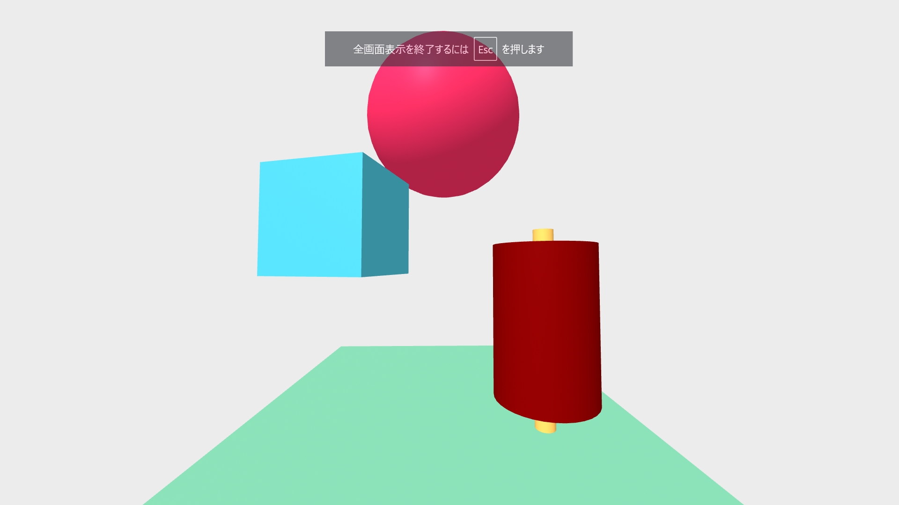
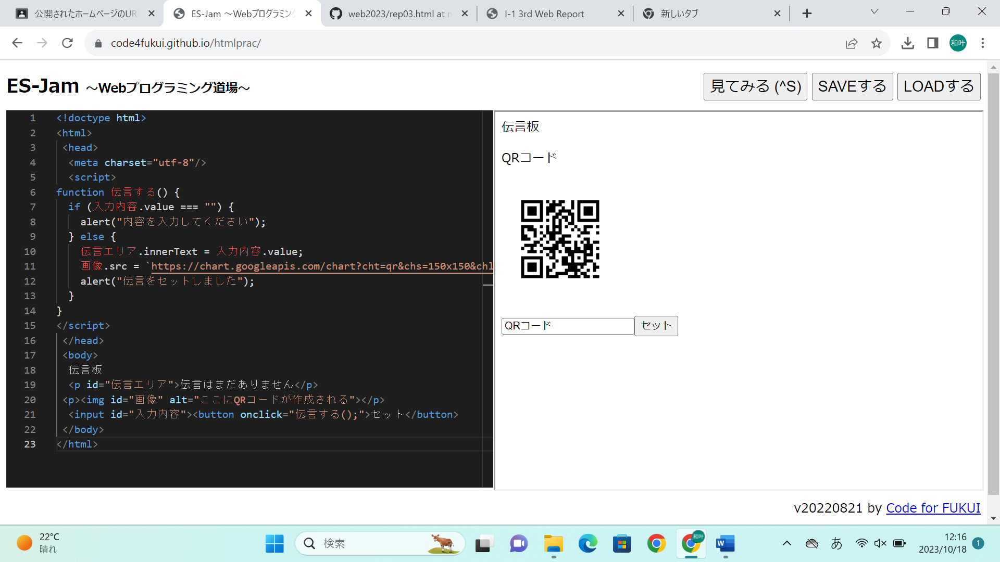

第3週目
3-1 JavaScript体験：VR空間を作る

自作した３次元空間
1.内容
A-FrameにあるテンプレートをWebプログラミング道場のコーディングエリアにペーストし、JavaScript言語を使い、位置や向き、色、高さなどを変更する。
2.感想
図形を移動させたり、重ねたりできるのでいろんなものを再現できそうだと思った。右にあるやつは、漫画肉を再現しようとしたものである。思ったより、近づけることができたのでとてもうれしかった。色も英語や数字でプログラムできるようになっていることに驚いた。
3-2 JavaScript体験：

伝言板
1.内容
Webプログラミング道場で、JavaScript言語を使い、伝言板を作る。空入力をできないようにしたり、入力ボックスの中身を消すようにしたり、QRコードが表示されるようにしたりする伝言板を作った。
2.感想
<>中など指示されたことをしていただけだったので、JavaScriptを勉強し、また一から作りたいと思った。綴りや場所を一つでも間違えていたら思った通りの動きにならないので、難しいと思ったけど、それよりも思った通りの動きをした時のうれしさの方が大きかった。